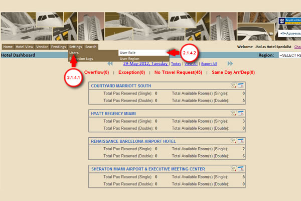
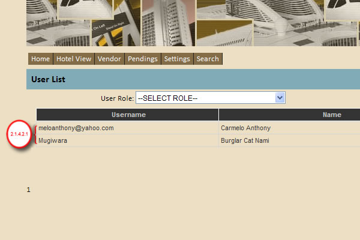
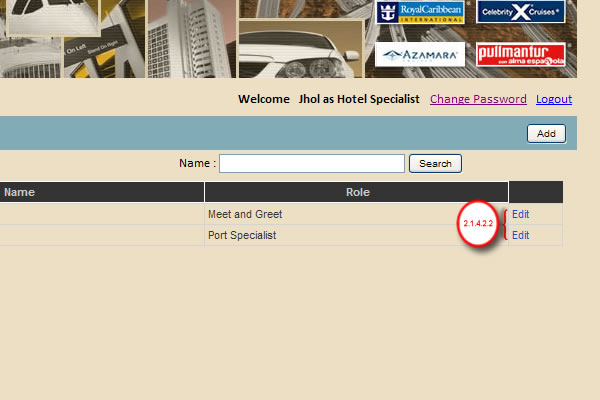
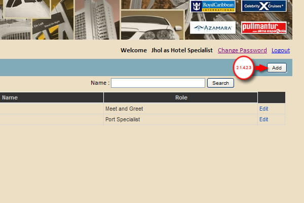
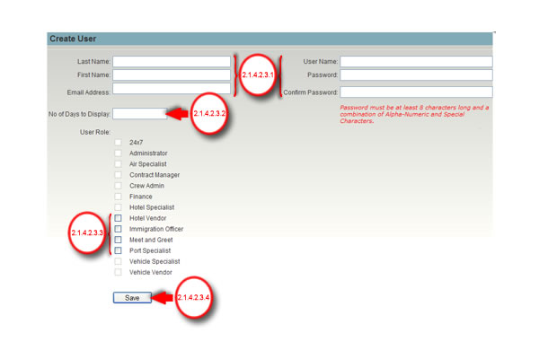

2.1.4 Under Homepage, Point the mouse cursor to Settings Tab.

2.1.4.1 Under Settings tab, Point the mouse cursor to Users.
2.1.4.2 Select the User Role.

2.1.4.2.1 Lists of Users.

2.1.4.2.2 Click the Edit link corresponding to a username to view / update details.

2.1.4.2.3 Click the Add button to create new user.

2.1.4.2.3.1 Fill in the required fields.
2.1.4.2.3.2 Enter No. of days to display. This is used to display X number of days for a date range display.
2.1.4.2.3.3 Select User Role to assign. You need to specify the primary role of a user thru the radio button selection.
2.1.4.2.3.4 Click the Save button to Add new user.
Created with the Personal Edition of HelpNDoc: Easily create iPhone documentation